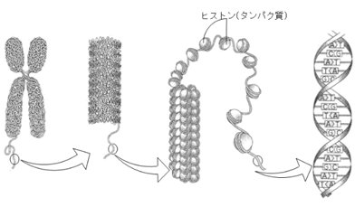

染色体・DNA・遺伝子・ゲノムの関係を「本棚のたとえ」で整理しよう
生物の形や性質などの特徴を形質といい、形質が親から子に伝わることを遺伝といいます。遺伝の情報を伝える物質が細胞の核の中にあるDNAです。

図1：染色体→DNA→二重らせん構造（染色体はDNAがヒストン〈タンパク質〉に巻きついて折りたたまれたもの）
✅ ミニテスト①（染色体・DNA・遺伝子）
Q1. 染色体・DNA・遺伝子の関係として正しいものはどれか。
Q2. ヒトの体細胞の染色体の本数を語群から選んで入れよう。
DNAは二重らせん構造をもちます。構成単位はヌクレオチド（糖＋リン酸＋塩基）です。
図：ヌクレオチドの構造（リン酸＋糖＋塩基の3部品で1つ。塩基はA・T・G・Cの4種類）
| ヌクレオチドの部品 | 内容 |
|---|---|
| 糖 | デオキシリボース（1種類） |
| リン酸 | リン酸（1種類） |
| 塩基 | A（アデニン）・T（チミン）・G（グアニン）・C（シトシン）の4種類 |
✅ ミニテスト②（DNAの構造）
Q1. DNAの構造として正しいものはどれか。
Q2. DNA の塩基の対の組合せで正しいものはどれか。
ゲノムとは、ある生物がもつ遺伝情報のすべてのことです。
| 項目 | ヒトの数値 | 覚え方 |
|---|---|---|
| 体細胞の染色体 | 46本（23対）＝2ゲノム分 | 父23本＋母23本 |
| 生殖細胞（精子・卵） | 23本＝1ゲノム分 | 半分になる |
| 1ゲノムの塩基対 | 約30億個 | 「さん…じゅう億」 |
| 体細胞の塩基対 | 約60億個（2ゲノム） | 30億×2 |
| 遺伝子の数 | 約22,000個 | 「にまんにせん」個 |
✅ ミニテスト③（ゲノム）
Q1. ゲノムについて正しいものはどれか。
Q2. ヒトの1ゲノムの塩基対数と遺伝子数を語群から選んで入れよう。
ブロッコリー・バナナ・魚の精巣など細胞数が多い材料からDNAを取り出せます。各手順の「なぜ？」が試験に出ます。
✅ ミニテスト④（DNA抽出実験）
Q1. DNA抽出で台所用洗剤を使う主な理由はどれか。
Q2. エタノールをろ液に静かに注ぐ理由はどれか。